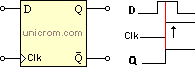

Con la construcción previa de la ALU para que realice diversas operaciones, surge la incógnita de ¿Dónde se van a almacenar esos valores de las operaciones? o donde ejecutar operaciones seguidas, pues aquí es donde entra en juego la memoria de computador.
Se entiende por memoria un circuito en condiciones de mantener información y hacerla disponible cuando se necesita.
Se distinguen dos tipos de memorias: la memoria secuencial y la memoria de acceso aleatorio o RAM. La memoria secuencial se lee o
escribe mediante la organización de los datos uno tras otro. Para leer un dato es necesario leer todos los almacenados previamente en
el mismo orden de almacenamiento; para escribir un dato es necesario escribir después del último previamente escrito. Un ejemplo de memoria secuencial es una cinta en la que se almacenan los datos, tal como en la grabadora de audio; leer un hecho, mover la cinta hasta el punto deseado.
La memoria RAM es la memoria a corto plazo del computador, se encarga de recordar la información que se tiene en cada una de las aplicaciones temporalmente. Es decir, mientras esté encendido el computador, a diferencia de otras categorías de la memoria principal
como los discos duros y las tarjetas de memoria, los cuales persisten cuando el computador no está conectado a una fuente de alimentación.
Un computador puede realizar diferentes tareas al mismo tiempo, en ocasiones al demandarle muchas este suele tornarse un poco lento, lo que se debe a
que tal vez no se tiene la suficiente memoria RAM y es que precisamente esta es una de las funcionalidades más importantes que posee.
La lógica secuencial de nuestro computador será suministrada por un elemento denominado flip-flop. Este es un dispositivo biestable (de dos estados),
que funciona para memoria básica de lógica secuencial, con memoria se hace referencia a que es capaz de permanecer en uno de dos estados durante un
tiempo indefinido, hasta que ocurra una perturbación, en este momento recuerda en que estado esta y a cuál debe cambiar. Los flip-flops permiten
el almacenamiento y transferencia de datos digitales y se usan en unidades llamadas “registros” para almacenamiento de datos numéricos binarios.
Algunas de sus características son:
• Asumen solamente uno de dos estados posibles.
• Tienen un par de salidas que son complemento una de la otra.
• Tienen una o más entradas que pueden causar que el estado del Flip-flop cambie.
Uno de los Flip-flops más sencillos es denominado Tipo D. Su funcionamiento consiste en dejar pasar lo que entra por D, a
la salida Q, después de un pulso de reloj.

En ingles es conocida como clock signal o simplemente clock, esta es una señal binaria que sirve para coordinar las acciones de varios circuitos, la señal oscila entre bajo y alto (0 y 1). Los circuitos que utilizan la señal de
reloj para sincronizarse, pueden, según su construcción, basarse en el flanco ascendente o en el descendente de la señal. Dependiendo de la entrada del reloj se va a producir un cambio diferente en la salida.
En el anterior diagrama habrá un cambio en el estado del flip-flop tipo D cuando en la entrada de reloj se detecte el momento en que el nivel pase de bajo a alto (flanco ascendente o de subida). Cuando en nivel del reloj cambia de bajo a alto se lee la entrada del flip-flop (D) y se pone en la salida Q el mismo dato.